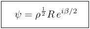

Selected Papers on
Geometric Algebra in Quantum Mechanics
Preface. These papers analyze the quantum mechanical Dirac theory of the electron with respect to its geometric structure as revealed by reformulation in terms of Spacetime Algebra. The main result is that the Dirac wave function psi can be decomposed into the invariant operator form

while the unit imaginary in the Dirac equation is necessarily identified with electron spin. This striking result was first derived [1] from a formulation in the book STA, which, incidentally, already showed that imaginary scalars are superfluous in the Dirac theory. Alternative derivations more directly related to the standard matrix formulation are given in [3] and an appendix to [2]. The method employed in [2] makes it transparently clear that the socalled "Fierz identities for bilinear covariants" are trivial consequences of the above invariant form for the wave function.
Paper [2] provides a compact and complete formulation and analysis of local conservation laws in the one-particle Dirac theory. Comparable derivations by standard matrix and tensor methods are nearly ten times longer, as can be seen in the work of Takabayashi referenced in [2]. An analogous treatment of local conservation laws in Schroedinger's theory plays an essential role in the Bohmian interpretation of quantum mechanics. Paper [2] makes explicit the complications of extending Bohm's approach to relativistic QM.
The nonrelativistic treatment of local conservation laws including spin is given in [5] and further discussed in [6]. The main message of these papers is that standard interpretations of quantum mechanics (including Bohm's) fail to take account of the relation between spin and imaginary numbers that is inherent in Dirac theory. The necessary connections between Dirac, Pauli and Schroedinger theories are derived in [4], where inconsistencies among standard interpretations are pointed out.
Paper [3] emphasizes the point that common interpretations of Pauli and Dirac matrices as quantum mechanical operators are unjustified and ill-conceived. GA makes it absolutely clear that these matrices represent directions in space and spacetime, with no implications about spin whatsoever. Indeed, contrary to Dirac's claim and popular belief, spin is not introduced into the Dirac theory by gamma matrices but by the definition of energy-momentum operators. The STA formulation of Dirac theory makes this fact explicit. More about this and other matters of QM interpretation in Section III of Universal Geometric Calculus.
- Abstract: The Dirac equation is expressed entirely in terms of geometrical quantities by providing a geometrical interpretation for the (-1)^{1/2} which appears explicitly in the Dirac equation. In the modification of the Dirac electron theory which ensues, the (-1)^{1/2} appears as the generator of rotations in the spacelike plane orthogonal to the plane containing the electron current and spin vectors. This amounts to a further "relativistic" constraint on the spinor theory and so may be expected to have physical consequences. It does not, however, conflict with well-substantiated features of the Dirac theory.
D. Hestenes, J. Math. Phys. 8, 798-808 (1967).
© American Institute of Physics.
- Abstract:
By a new method, the Dirac electron theory is completely reexpressed
as a set of conservation laws and constitutive relations for local observables, describing the local distribution and flow of mechanical quantities. The coupling of the electromagnetic field to the electron is shown to be determined by the definitions of the observables rather than by the Dirac equation. Planck's constant appears in the equations only in connection with the electron spin. The equations are most readily interpreted by assuming that the electron is a structureless point charge, the spin and magnetic moment arising from the dynamics of electron motion.
D. Hestenes, J. Math. Phys., 14 (7), May 1973, 893-905.
© American Institute of Physics.
- Abstract: The geometric formulation of the Dirac theory with spacetime algebra is shown to be equivalent to the usual matrix formalism. Imaginary numbers in the Dirac theory are shown to be related to the spin tensor. The relation of observables to operators and the wavefunction is analyzed in detail and compared with some purportedly general principles of quantum mechanics. An exact formulation of Larmor and Thomas precessions in the Dirac theory is given for the first time. Finally, some basic relations among local observables in the nonrelativistic limit are determined.
D. Hestenes, J. Math. Phys. 16, 556-572 (1975).
© American Institute of Physics.
- Abstract: Properties of observables in the Pauli and Schroedinger theories and first order relativistic approximations to them are derived from the Dirac theory. They are found to be inconsistent with customary interpretations in many respects. For example, failure to identify the "Darwin term" as the s-state spin-orbit energy in conventional treatments of the hydrogen atom is traced to a failure to distinguish between charge and momentum flow in the theory. Consistency with the Dirac theory is shown to imply that the Schroedinger equation describes not a spinless particle as universally assumed, but a particle in a spin eigenstate. The bearing of spin on the interpretation of the Schroedinger theory discussed. Conservation laws of the Dirac theory are formulated in terms of relative variables, and used to derive virial theorems and the corresponding conservation laws in the Pauli-Schroedinger theory.
D. Hestenes (& R. Gurtler), J. Math. Phys. 16, 573-583 (1975).
© American Institute of Physics.
- Abstract: The Pauli theory of electrons is formulated in the language of multivector calculus. The advantages of this approach are demonstrated in an analysis of local observables. Planck's constant is shown to enter the theory only through the magnitude of the spin. Further, it is shown that, when obtained as a limiting case of the Pauli theory, the Schroedinger theory describes a particle with constant local spin. An important consequence of this result is the realization that the usual interpretations of the Dirac and Schroedinger theories are mutually inconsistent in certain details.
D. Hestenes (& R. Gurtler), Am. J. Phys. 39, 1028-1038 (1975).
© American Institute of Physics.
- Abstract: A rigorous derivation of the Schroedinger theory from the Pauli (or Dirac) theory implies that the Schroedinger equation describes an electron in an eigenstate of spin. Furthermore, the ground-state kinetic energy is completely determined by the electron spin density. This can be explained by interpreting the spin as an orbital angular momentum, which is necessarily accompanied by a kinetic energy. Thus, the spin is a zero-point angular momentum associated with the zero-point energy of the electron. Since the dispersion in electron momentum is determined by the zero-point energy, the Heisenberg uncertainty relations for an electron can be interpreted as a property of the electron spin motion. The kinetic interpretation of spin and the statistical interpretation of quantum mechanics can be jointly sustained by regarding the electron as a point particle. It follows that stationary electron states are sources of fluctuating electric fields. There is reason to believe that these fluctuating fields are responsible for the Van der Waals force and can be identified with electromagnetic vacuum field fluctuations. The kinetic interpretation of spin then implies that the Van der Waals forces are spin dependent. These ideas are not only consistent with the conventional mathematical formalism of quantum mechanics, they provide a more complete and coherent interpretation of many details in the formalism than does the alternative Copenhagen interpretation. They present some difficulties, however, which, if the kinetic interpretation of spin is correct, probably require some modification of quantum electrodynamics to be resolved.
D. Hestenes, Am. J. Phys., 47 (5), May 1979, 399-415.
© American Institute of Physics (http://www.aapt.org).
- Abstract: The Dirac wave function is represented in a form where all its components have obvious geometrical and physical interpretations. Six components which compose a Lorentz transformation determining the electron velocity are spin directions. This provides the basis for a rigorous connection between relativistic rigid body dynamics and the time evolution of the wave function. The scattering matrix is given a new form as a spinor-valued operator rather than a complex function. The approach reveals a geometric structure of the scattering matrix and simplifies scattering calculations. This claim is supported by an explicit calculation of the differential cross-section and polarization change in Coulomb scattering. Implications for the structure and interpretation of relativistic quantum theory are discussed.
D. Hestenes, Originally published in: A Symposium on the Mathematics of Physical Space-Time, Facultad de Quimica, Universidad Nacional Autonoma de Mexico, Mexico City, Mexico (1981), 67-96.
© D. Hestenes
- Abstract: The Dirac equation has a hidden geometric structure that is made manifest by reformulating it in terms of a real spacetime algebra. This reveals an essential connection between spin and complex numbers with profound implications for the interpretation of quantum mechanics. Among other things, it suggests that to achieve a complete interpretation of quantum mechanics, spin should be identified with an intrinsic zitterbewegung.
D. Hestenes, published in: Annales de la Fondation Louis de Broglie, Vol. 28, 390-408 (2003).
© D. Hestenes
- Abstract: The possibility that zitterbewegung opens a window to particle substructure in quantum mechanics
is explored by constructing a particle model with structural features inherent in the Dirac equation.
This paper develops a self-contained dynamical model of the electron as a lightlike particle with
helical zitterbewegung and electromagnetic interactions. The model admits periodic solutions with
quantized energy, and the correct magnetic moment is generated by charge circulation. It attributes
to the electron an electric dipole moment rotating with ultrahigh frequency, and the possibility of
observing this directly as a resonance in electron channeling is analyzed in detail. Correspondence
with the Dirac equation is discussed. A modification of the Dirac equation is suggested to incorporate
the rotating dipole moment.
D. Hestenes, published in: Foundations of Physics, Vol. 40, 1-54 (2010); DOI 10.1007/s10701-009-9360-3.
© D. Hestenes